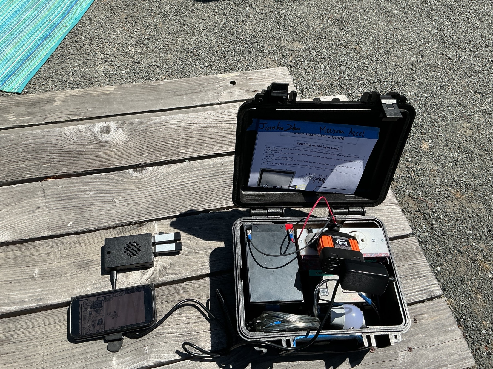

A library that fits in your hand
The Raspberry Pi broadcasts a local Wi-Fi hotspot so nearby phones can browse an offline Bible library — no internet, no data plan, no setup. Every kit ships pre-configured and ready to deploy. This page covers what it does, what's loaded on the OS, what the interface looks like, and how to get going in the field.
Contents
Overview
What is the VillageServer Pi?
A Raspberry Pi pre-loaded with VillageServer OS — a self-contained offline library server. Every kit ships ready to go: no flashing, no installing, no code. Power it on and it broadcasts its own Wi-Fi network. Anyone within range joins that network and opens the library in a phone browser — like having a small offline internet made entirely of Scripture and gospel resources.

What's on the OS
- Auto-broadcasting Wi-Fi hotspot — turns on the moment the Pi powers up, no router or internet needed
- A built-in offline library server — reachable at 10.43.0.1 from any phone browser, no app to install
- Multi-language support — one library per language, swappable by microSD card
- Four content sections per language — Bible, Audio, Video, and Books, browsable and downloadable straight from the phone
- Remote content management — our team can push new or updated libraries to a deployed Pi without anyone in the field touching it
- Fully offline operation — works indefinitely with no internet connection, anywhere there's power
What's in the kit
| Item | Details |
|---|---|
| Raspberry Pi | Pre-configured with VillageServer OS — arrives ready to power on |
| Language library cards | One microSD per language, already loaded, seated in USB readers |
| Power supply / power bank | 5V USB-C or USB Micro-B depending on Pi model |
| Carry case | Keeps everything together for field deployment |
Nothing to flash, install, or configure — that's all done before the kit ships. Jump to the quick start guide below to get a kit running in the field.
Get started
Quick start guide
The fastest way to get a field kit running, plus where to go for anything deeper — content management, technical configuration, and the full VillageServer OS documentation.
Download the printable Quick Start Guide — covers powering on, joining the Wi-Fi, and using the library, in plain language for anyone in the field.
The VillageServer OS site is where the full technical documentation, remote content management, and admin tools live. This page is the plain-language overview — head there once you've got the gist here.
The interface
What you see on a phone
When a phone joins the VillageServer Wi-Fi and opens 10.43.0.1 in a browser, this is what appears — a clean offline library home. No login, no app install, no data required. Try the demo below — tap a language, then a section, then a file to download it.
VillageServer Library
English Library
Bible
This is a live click-through demo — tap your way through it.
Each language has four content sections, and tapping a file downloads it straight to the phone for offline use.
Bible — full Scripture text, chapter by chapter.
Audio — dramatised audio Bible recordings, playable directly in the browser.
Video — LUMO gospel films (Matthew, Mark, Luke, John) and other gospel media.
Books — commentaries, discipleship materials, and reference PDFs.
For the field
Using the library — step by step
This is all a person in the field needs to know. The server handles everything else automatically.
Power on the VillageServer
Plug in the power bank or power supply. Wait about 60 seconds for the Pi to finish starting up. The Wi-Fi network will appear automatically.
Join the Wi-Fi network
On your phone, open Settings → Wi-Fi and select VillageServer. Enter the password village123 when prompted.
Open the library in a browser
Open any browser (Chrome, Safari, Firefox) and type 10.43.0.1 into the address bar. Hit Go. The library home page loads instantly.
Choose a language and browse
Tap a language card, then tap Bible, Audio, Video, or Books. You can read, listen, or watch directly in the browser without saving anything first.
Download to share later
Hold any file link to save it to your phone. Once saved, share it to other phones via AirDrop, Quick Share, LocalSend, Bluetooth, or USB without any Wi-Fi needed.
Troubleshooting
Common issues
Content updates and deeper technical management are handled remotely by our team through the VillageServer OS site — nobody in the field needs to touch the Pi for that. Below are the few things worth checking on-site if something looks off.
Phone joins the Wi-Fi but the page won't load
Double-check the address bar shows exactly 10.43.0.1, not a search. Some phones auto-correct it into a Google search instead of visiting the address directly — retype it if needed.
Phone warns "no internet connection"
That's expected and normal — the VillageServer network is intentionally offline. Tap "Stay connected" or "Use anyway" and continue.
Wi-Fi network isn't showing up
Give the Pi a full 60 seconds after power-on to finish starting up. If it still doesn't appear, power-cycle it (unplug, wait 10 seconds, plug back in).
A language or file seems missing
That's a content update, not a device problem — flag it to our team through the VillageServer OS site and it'll be pushed remotely.
For anything beyond these basics — content management, technical configuration, or deeper diagnostics — head to the VillageServer OS companion site.